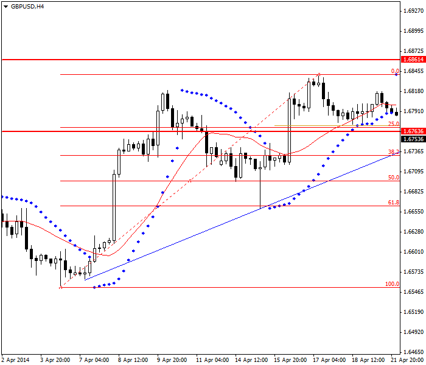
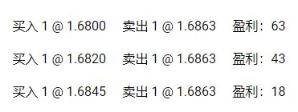

<!DOCTYPE html>
<html>
</html>
<head>
  <meta charset="utf-8">
  <meta http-equiv="X-UA-Compatible" content="IE=edge">
  <title>外汇站（fx-z.com） - 头寸的放大与缩小</title>
  <meta name="description" content="">
  <meta name="viewport" content="width=device-width, initial-scale=1">
  <meta name="robots" content="all,follow">
  <!-- Bootstrap CSS-->
  <link rel="stylesheet" href="vendor/bootstrap/css/bootstrap.min.css">
  <!-- Font Awesome CSS-->
  <link rel="stylesheet" href="vendor/font-awesome/css/font-awesome.min.css">
  <!-- Google fonts - Roboto-->
  <link rel="stylesheet" href="https://fonts.googleapis.com/css?family=Roboto:400,300,700,400italic">
  <!-- owl carousel-->
  <link rel="stylesheet" href="vendor/owl.carousel/assets/owl.carousel.css">
  <link rel="stylesheet" href="vendor/owl.carousel/assets/owl.theme.default.css">
  <!-- theme stylesheet-->
  <link rel="stylesheet" href="css/style.default.css" id="theme-stylesheet">
  <!-- Custom stylesheet - for your changes-->
  <link rel="stylesheet" href="css/custom.css">
  <!-- Favicon-->
  <link rel="shortcut icon" href="img/favicon.png">
  <!-- Tweaks for older IEs--><!--[if lt IE 9]>
    <script src="https://oss.maxcdn.com/html5shiv/3.7.3/html5shiv.min.js"></script>
    <script src="https://oss.maxcdn.com/respond/1.4.2/respond.min.js"></script><![endif]-->
</head>
<body>
  <div id="all">
    <div class="container-fluid">
      <div class="row row-offcanvas row-offcanvas-left"> 
        <!--   *** SIDEBAR ***-->
        <div id="sidebar" class="col-md-4 col-lg-3 sidebar-offcanvas">
          <div class="sidebar-content">
            <h1 class="sidebar-heading"> <a href="https://fx-z.com">fx-z.com</a></h1>
            <p class="sidebar-p">介绍外汇相关的基本知识，告诉您如何进行自己的技术面和基本面分析，讲解先进的交易理念，并且为您阐述失败交易者与专业交易者之间的真正区别。 </p>
            <p class="sidebar-p">通过这些课程的学习，您将学会如何根据自己的优势来应用情绪分析，还将了解真实世界的事件会对货币汇率产生什么影响，央行在外汇市场中所发挥的作用，以及交易者在颇受欢迎的即期外汇交易中有哪些选择方案。 </p>
            <ul class="sidebar-menu">
                <!-- Link-->
                <li class="sidebar-item"><a href="https://fx-z.com" class="sidebar-link">首页</a></li>
                <!-- Link-->
                <li class="sidebar-item"><a href="cihui.html" class="sidebar-link">外汇词汇</a></li>
                <!-- Link-->
                <li class="sidebar-item"><a href="ebook.html" class="sidebar-link">获取外汇电子书</a></li>
            </ul>
            <p class="social"><a href="https://www.forextimechina.com.cn/zh?form=IZIN" target="_blank"data-animate-hover="pulse" class="external facebook"><i class="fa fa-eur"></i></a><a href="https://www.forextimechina.com.cn/zh?form=IZIN" target="_blank" data-animate-hover="pulse" class="external gplus"><i class="fa fa-gbp"></i></a><a href="https://www.forextimechina.com.cn/zh?form=IZIN" target="_blank" data-animate-hover="pulse" class="external twitter"><i class="fa fa-rmb"></i></a><a href="https://www.forextimechina.com.cn/zh?form=IZIN" target="_blank" title="" class="external instagram"><i class="fa fa-dollar"></i></a><a href="https://www.forextimechina.com.cn/zh?form=IZIN" target="_blank" data-animate-hover="pulse" class="email"><i class="fa fa-money"></i></a></p>
            <div class="copyright text-center text-md-left">
             
              
            </div>
          </div>
        </div>
        <!--   *** SIDEBAR END ***  -->
        <!--   *** DETAIL ***-->
        <div class="col-md-8 col-lg-9 content-column white-background">
          <div class="small-navbar d-flex d-md-none">
            <button type="button" data-toggle="offcanvas" class="btn btn-outline-primary"> <i class="fa fa-align-left mr-2"></i>菜单</button>
            <h1 class="small-navbar-heading"> <a href="https://fx-z.com/18-1.html">下一篇 </a></h1>
          </div>
          <div class="row">
            <div class="col-xl-10">
              <div class="content-column-content">
                <h1>头寸的放大与缩小</h1>
  <p>
    ”放大”头寸是指，随着价格向有利方向运动以及您对交易盈利的信心上涨而增加头寸数量。“缩小”头寸是指，随着价格动量变小而削减头寸数量。作为一种理智的策略，头寸缩放需要保持良好的账目记录，除非您交易的时间周期非常短，以至于您必须将所有时间用于下单，从而无法关注市场动态。
</p>
<p>
    如果您打算交易 5 手而且走势对您有利，您一开始就执行这 5 手交易将为您带来更大的利润。放大头寸意味着先执行一笔交易，然后在更高的价位执行更多笔数（如果您是一位买家），并且在接近盈利目标时执行最终的一两笔交易。但放大头寸的优势在于您并未将所有鸡蛋放在同一个篮子里。在走势突然偃旗息鼓且突然结束的情况下，如果您采用头寸放大策略，您只需让一两个头寸离场，因而亏损是有限的。如果您一开始将五笔交易“全部”执行完，则亏损更大。
</p>
<p>
    有些交易者称他们永远不会采用任何降低总盈利的策略。但这种说法带有一丝绝望感，而且无法窥见森林全貌。任何用于降低亏损风险与实际风险的方法都需要您持续位于场内交易。如果您筹码尽失，您怎么可能继续交易。放大头寸是一种非常适合那些容易仓促做出交易决定的人士的方法。
</p>
<p>
    与之相似，缩小头寸是一项用于降低风险的技术。通过在走势初期对一两笔合约进行获利了结，您可以提高自己的盈亏比。剩下的合约几乎为“自由”合约，尤其是当您使用追踪止损，以便对首先几笔合约获利了结时，止损位已经相对较低。
</p>
<p>
    头寸缩放配合追踪止损可以很好地降低风险，此外，还可以结合使用另一项降低风险的策略——即将其他指标作为交易条件来确认您的初始分析及头寸。在任何及所有时间周期中，当价格走势结束时，应该有指标提醒您，您的离场位已经临近。您可以根据 1 号指标进入或退出一两个合约，根据 2 号指标增加或删减一两个合约，并且当其他指标给出一致信号时完成入场/离场。
</p>
<p>
    以头寸缩小的方式离场始终较难。原因之一，没人想放弃利益。原因之二，众所周知指标是不可靠的。您可能会发现，价格走势强劲，但随机震荡指标、RSI 和动量全部走低。这些都是适用于头寸缩小的逻辑指标。但是，当您退出一两笔合约之后不久，价格再次上涨，然后略有回落，然后再次上行。现在，您可能面临亏损，这当然不是您想要的。随机震荡指标通常会给出走势结束的信号——即货币被普遍超买——但是在一场非常强劲的走势中，它可能长期处于超买状态。因此，如果您并非趋势跟随者，这正是随机震荡指标并不是最适合头寸缩小的原因。将它用于 USD/JPY 的长期走势中测试，您将明白该原因。
</p>
<p>
    <strong>示例</strong>
</p>
<p>
    例如，您基于某些原因而认为 GBP/USD 经过回调后已经触底，下一步将进入上涨趋势并越过前一个最高点。您知道自己的目标位——前一个高点价（1.6843）加 20 个基点，即 1.6963。您也知道自己的止损位——前一个低点价（1.6771）减 10 个基点，即 1.6761。当前价格为 1.6800。
</p>
<p>
     适当应用头寸放大策略的示例
</p>
<p>
    您以当前价位 1.6800 买入 1 手，止损位设为 1.6761。而且这一止损位低于应设定的支撑位。您的盈利目标为 63 点，止损位为 39 点。
</p>
<p>
    之后，价格上涨至 1.6820。您加仓 1 手并将其止损位设在比第一个止损位高 20 点的位置，即 1.6781。
</p>
<p>
    之后，价格上涨至 1.6840。这非常接近前一个高点价，但之后确实越过该价位，让您稍事喘息。您假设的场景即将上演。交易者记得，当价格越过前一个高点价时，他们随着从众效应回到了多头行情。您在 1.6845 的价位加入第三手，并将三个止损位全部提高 20 个基点，即 1.6801。
</p>
<p>
    现在，您的价格到达 1.6862。您的损益表显示您盈利 124 个基点：
</p>
<p>
    <br/>
</p>
<p>
     
</p>
<p>
    为何不在起点 1.6800 一次买入三手并盈利 189 点呢？答案有两个：如上所述：
</p>
<p>
    我们可以按照以前见到的情况来猜测未来可能的情况，但预期的价格逆转也可能偃旗息鼓。将资金分开配置可以让我们避开主观空想的风险。
</p>
<p>
    我们利用市场本身的验证信号来保证其他手数的利润。
</p>
<p>
    <br/>
</p>
<p>
    <br/>
</p>
              </div>
            </div>
          </div>
        </div>
      </div>
    </div>
  </div>
  <!-- JavaScript files-->
  <script src="vendor/jquery/jquery.min.js"></script>
  <script src="vendor/popper.js/umd/popper.min.js"> </script>
  <script src="vendor/bootstrap/js/bootstrap.min.js"></script>
  <script src="vendor/jquery.cookie/jquery.cookie.js"> </script>
  <script src="vendor/owl.carousel/owl.carousel.min.js"></script>
  <script src="vendor/masonry-layout/masonry.pkgd.min.js"></script>
  <script src="js/front.js"></script>
</body>